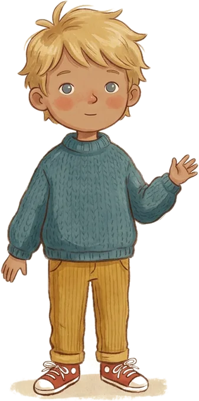
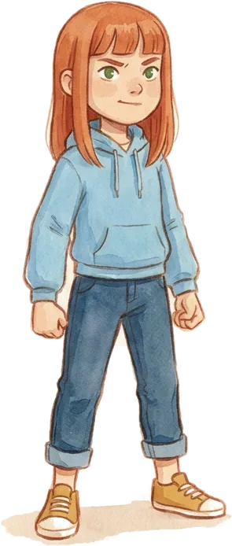
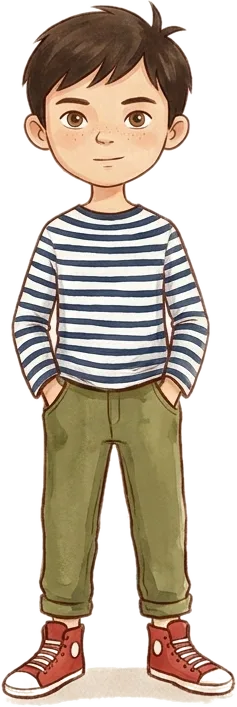
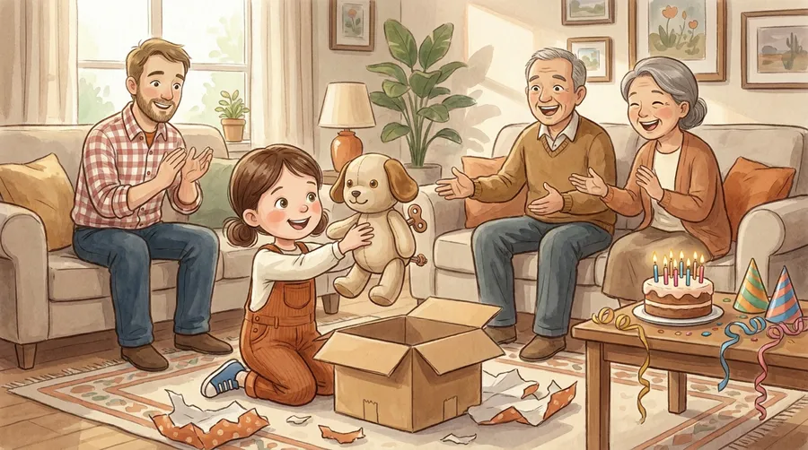
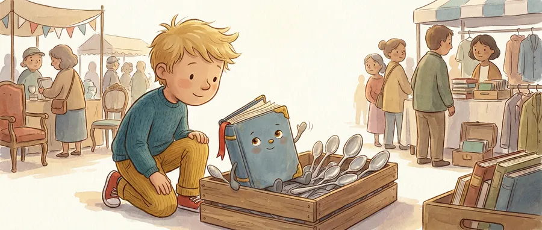
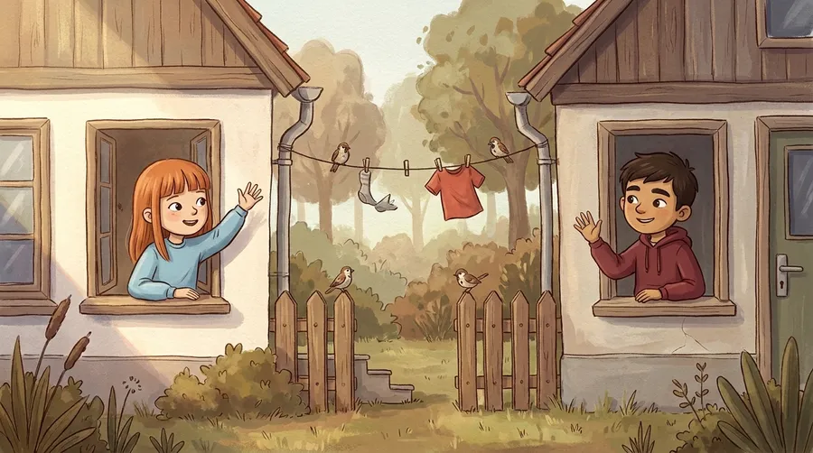
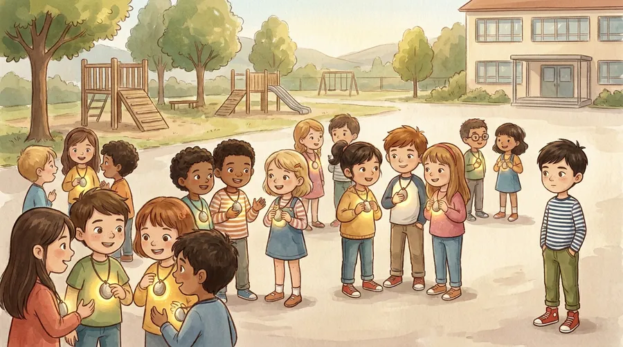

Ida
Der Maschinenfreund
Ich sag immer: „Der hört mir immer zu.“
„Ich weiß, wen ich rufe.“
Der bequemste Freund: immer Zeit, nie Streit, immer dasselbe Lächeln. Das Buch nimmt das Gefühl ernst — und fügt eine Unterscheidung hinzu.
Bilderbücher für Kinder von 5 bis 10
Für Tablets, Handys und KI — und für das, was in dir selbst steckt. Geschichten, in denen Kinder selbst steuern.
Zum Ausprobieren · mit eurem Kind
Er weiß alles. Sofort. Immer. Stellt ihm drei Fragen — und schaut danach genau hin.
Genau darum geht es im Buch „Der Immerwisser“:
„Dein Kopf ist der Kapitän.“ Buch vormerkenDas Spiel braucht JavaScript. Die Auflösung steht trotzdem da — lest sie zusammen.
Die Figuren
Momente, die fast jede Familie kennt — und ein Satz, mit dem das Kind wieder selbst steuert. Tippt auf eine Karte.
Ida
Der Maschinenfreund
Ich sag immer: „Der hört mir immer zu.“
„Ich weiß, wen ich rufe.“
Der bequemste Freund: immer Zeit, nie Streit, immer dasselbe Lächeln. Das Buch nimmt das Gefühl ernst — und fügt eine Unterscheidung hinzu.

Mats
Der Nimmerschluss
Ich sag immer: „Nur noch eins.“
„Ich darf selbst Schluss machen.“
Aus „gleich“ werden vierzig Minuten, und das Ende kommt immer von außen. Bis Mats sein eigenes findet.

Lene
Der Zettelweg · Arbeitstitel
Ich sag immer: „Das machen die Großen.“
„Verabreden kannst du.“
Verabreden geht nur über die Handys der Erwachsenen — findet Lene. Bis ein Zettel den Weg nimmt.

Juri
Der Klingelstein
Ich sag immer: „Ohne gehöre ich nicht dazu.“
„Ich gehöre durch das, was wir tun.“
Alle haben eins. Nur Juri nicht. Das Buch löst Dazugehören vom Gerät — ohne das Gerät zu verteufeln.
Warum es diese Bücher gibt
Kinder lernen früh, wann sie „okay“ sind. Wenig später lernen sie, was sie antreibt — und wer dabei eigentlich steuert.
„Streng dich an.“ „Sei stark.“ Kinder merken sich früh, wofür sie gemocht werden.
du bist okayBelohnungen ziehen stark, die Selbststeuerung wächst langsam — auch vor dem Bildschirm.
du bist bereitAus „Ich muss“ kann jetzt „Mir ist wichtig“ werden. Werte werden in diesen Jahren stimmig und wirksam.
beides zusammenDopamin ist nicht das „Glückshormon“. Es treibt eher das Wollen und Losgehen an als das Genießen selbst.
Berridge & Robinson, American Psychologist 2016 · überwiegend Tier- und Erwachsenenstudien
Wer Kinder fürs Malen bezahlt, bekommt oft Kinder, die weniger malen. Ehrliches, konkretes Lob stärkt die eigene Lust.
Deci, Koestner & Ryan 1999 · Meta-Analyse, 128 Experimente · Quelle
Die Empfänglichkeit für Belohnung erreicht in der Jugend ihren Höhepunkt, die Selbststeuerung wächst bis Mitte zwanzig. Kinder brauchen lange Erwachsene, die mitsteuern.
Steinberg u. a. 2018 · über 5.000 Menschen, 11 Länder · Modell in der Forschung diskutiert
Nicht jedes Kind, das schwer aufhören kann, ist süchtig. Die WHO spricht erst nach rund zwölf Monaten deutlicher Beeinträchtigung von einer Spielstörung.
WHO, ICD-11 · Quelle
Ehrlich gesagt: Die „Antreiber“ aus Du bist okay stammen aus einem Praxismodell der Transaktionsanalyse, nicht aus der Hirnforschung. Die Verbindung zwischen frühen Sätzen und späterem Wollen ist unsere Deutung aus der Coaching-Arbeit — die Befunde oben stehen für sich.
„Führung beginnt nicht im Büro. Sie beginnt bei der Frage, wer steuert — du selbst oder das nächste Signal.“
Jay Manuzon · Coach und Autor der Reihe
Lieber erst kurz sprechen?
Das erste Tablet, die erste KI-Frage, Streit ums Handy — schreibt mir kurz, worum es bei euch geht. Ich melde mich persönlich und schlage eine Zeit vor, per Telefon oder Video.
Und wenn ihr danach tiefer einsteigen wollt: Ich begleite Eltern auch im Coaching.
Ein Gespräch unter Erwachsenen — keine Diagnose, keine Therapie. Wenn euch etwas ernsthaft Sorgen macht, ist die Kinderarztpraxis der richtige erste Weg.
Was die Zahlen sagen
der 8- bis 9-Jährigen haben ein eigenes Smartphone.
KIM-Studie 2024, mpfs · n = 1.225 · Angabe der Eltern · Quelle
sind es bei den 10- bis 11-Jährigen — fast doppelt so viele, am Übergang zur weiterführenden Schule.
KIM-Studie 2024, mpfs · Quelle
der Eltern von 10- bis 12-Jährigen mit Smartphone streiten mit ihrem Kind über die Nutzung — mehr als bei Teenagern.
bitkom 2025 · Eltern, deren Kind ein Smartphone nutzt · Quelle
Die Bücher kommen vorher: mit fünf bis zehn, solange die Frage noch „Wer steuert?“ heißt und nicht „Wer gewinnt den Streit?“.
Die Reihe · erscheint bald
Merkt euch euer Buch vor. Sobald es erscheint — bei Amazon und auf Wunsch mit eurem Kind in der Hauptrolle —, melden wir uns.

Der Maschinenfreunderscheint bald Der MaschinenfreundImmer Zeit, nie Streit.
Der Nimmerschlusserscheint bald Der NimmerschlussNur noch eins. Und noch eins.
Der Zettelwegerscheint bald Der ZettelwegVerabreden geht auch ohne Handy.
Der Klingelsteinerscheint bald Der KlingelsteinAlle haben eins. Nur einer nicht.Eine Mail, wenn es da ist. Kein Konto, kein Tracking, keine Werbung.